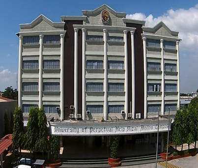

The University of Perpetual Help System DALTA (UPHSD) Molino Campus was established and inaugurated in May 1995. Currently, the UPHSD caters to a student population of 4,000 - a dramatic increase based on its initial 700 enrollees. Standing tall in a pristine land area of 6 hectares, the Molino campus is now the most notable educational institution in Bacoor, Cavite and its neighboring towns. It is currently undergoing campus expansion and upgrading of facilities. More than its structure, the people that comprise this thriving institution have continuously grown physically, intellectually, socially and spiritually as they consistently uphold the philosophy of the University: to constantly invoke Divine Guidance in the betterment of Filipino lives through quality education.
The University of Perpetual Help System DALTA believes and invokes Divine Guidance in the betterment of the quality of life through national development and transformation, which are predicated upon the quality of education of its people. Towards this end, the Institution is committed to the ideals of teaching, community service and research as it nurtures the value of “Helpers of God”, with “Character Building is Nation Building” as its guiding principle.
The University of Perpetual Help System DALTA shall emerge as a premier university in the Philippines. It shall provide a venue for the pursuit of excellence in academics, technology and research through local and international linkages. The University shall take the role of a catalyst for human development. It shall inculcate Christian values and Catholic doctrine, as a way of strengthening the moral fiber of the Filipino, a people who are “Helpers of God”, proud of their race and prepared for the exemplary global participation in the sciences, arts, humanities, sports and business. It foresees the Filipino people enjoying a quality of life in abundance, living in peace and building a nation that the next generation will nourish, cherish and value.
The UNIVERSITY OF PERPETUAL HELP SYSTEM DALTA is dedicated to the development of the Filipino as a leader. It aims to graduate dynamic students who are physically, intellectually, socially and spiritually committed to the achievement of the highest quality of life. As a system of Service in health and in education, it is dedicated to the formation of Christ-centered, service-oriented and research-driven individuals with great social concern and commitment to the delivery of quality education and health care. It shall produce Perpetualites as “Helpers of God” – a vital ingredient to nation building.
The school’s official name is University of Perpetual Help System DALTA (UPHSD). The seal was inspired by the special devotion of Dr. Josefina L. Tamayo, UPH co-founder and Tamayo grand matriarch, to the Blessed mother especially to the image of Our Lady of Perpetual Help, the school’s patroness. This well-known icon from the Byzantine era depicts the figure of Mary offering love and comfort to her son Jesus, even as the angelic beings above bear the instruments of His coming suffering and passion. Mary looks straight at the viewer, as if she wants to say that her perpetual help and comfort are also available to anyone who comes to her in need. The infant Jesus is symbolic of the youth who is nurtured by a devoted and loving Mary which speaks of the motherly care and love of the University. The two laurel leaves represent the two sons of the CEO and Chairman of the Board who are actively continuing the work that their parents have started in the community. The leaves also signify excellence which the university pursues not only in academics but also in leadership and in human relations for the fulfillment of the aspirations of the university as it carries on propagating its mission – to mold and educate youth as Helpers of God. The cameo is bordered by oval lines of maroon in white background. Maroon symbolizes the red blood of courage, vigor, and determination; white for purity; and the blue and gold colors of the Mother of Perpetual Help icon which symbolize generosity, abundance, hope, and vision. The year 1975 indicates when the University of Perpetual Help System DALTA was established while the tagline “Character Building is Nation Building”- UPHSD’s institutional motto expresses the encompassing commitment of Perpetual Help education to national development and progress.